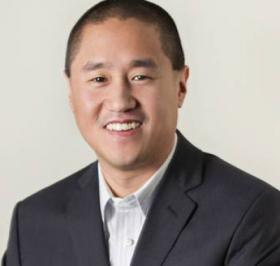

I joined the A100 Program to supplement my CS degree from Southern with some experience building real-world projects and to find an awesome company to join. After a successful apprenticeship with Independent Software, I'm now working as a full time developer.
--- Thomas Sonnemann, junior developer at Independent Software

Connecticut can fund startups; we can offer them places to work. We can do all that, but if we don't have developers, we're going nowhere. The A100 Program provided me with a great Apprentice, whom I hired immediately after his apprenticeship.
--Ted Yang, a founder of MediaCrossing in Stamford, a digital media trading company.
Being on a team and working to create a fully functional website is both exciting and challenging. Becoming an A100 Apprentice was the best move I’ve made for my education and career in software development.
--Nicole Flokos, A100 Apprentice Fall 2013
 Training
Training